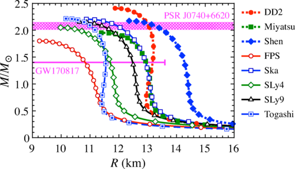
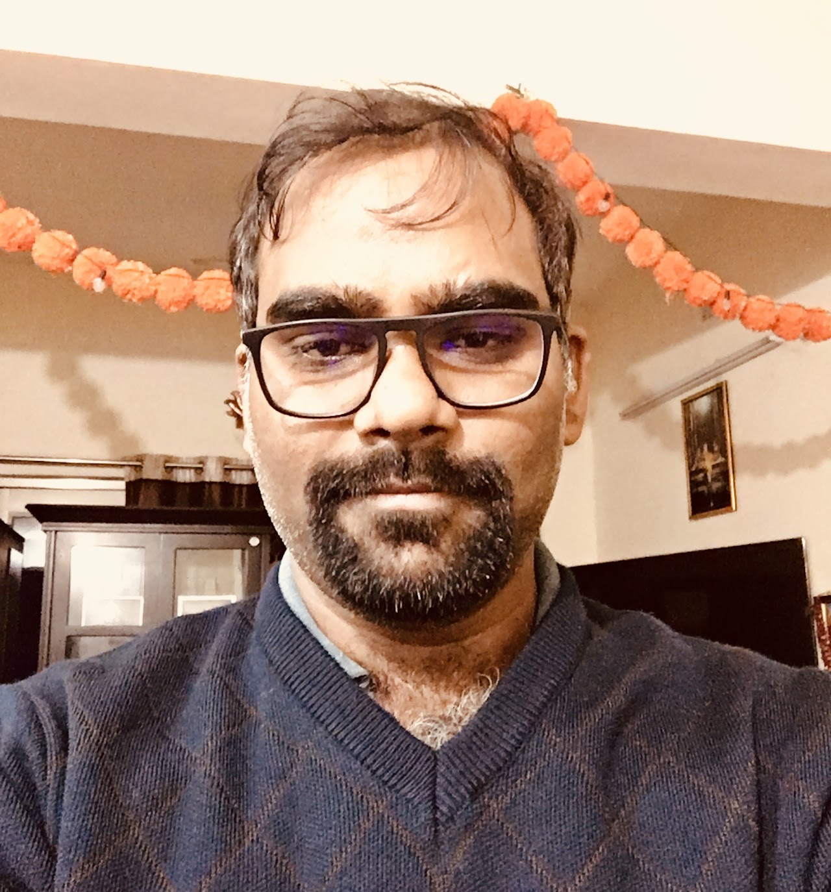
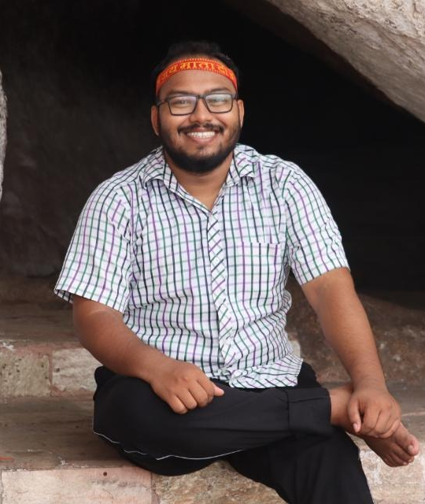
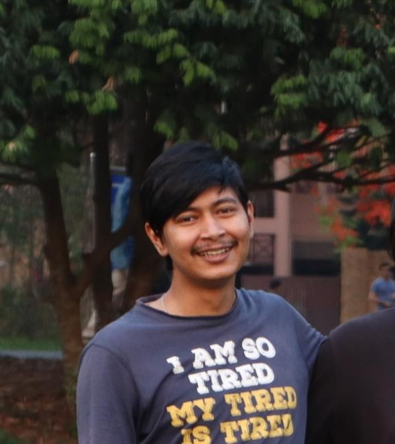
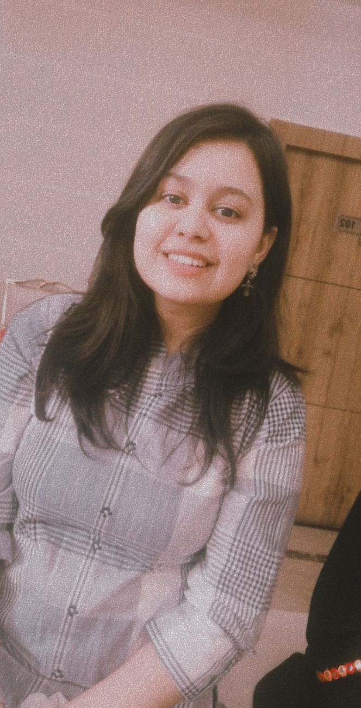
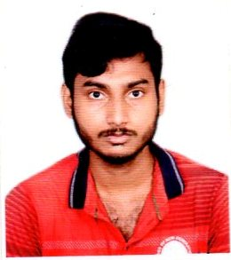
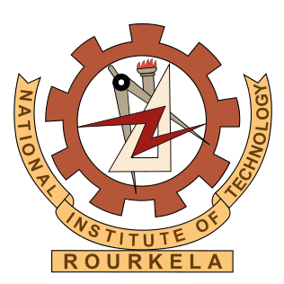
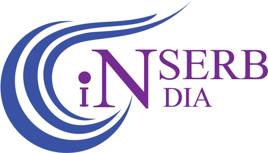

We are a research group at the National Institute of Technology, Rourkela, India — working at the intersection of nuclear physics, astrophysics, gravitational waves, and dark matter to unravel the mysteries of neutron stars.

Investigating the composition of neutron stars using relativistic mean-field models, constrained by LIGO, NICER, and pulsar timing observations.
Exploring strangeness-bearing particles — hyperons, delta baryons, and quarkyonic matter — in neutron star cores and their effect on stellar structure.
Computing quasinormal modes, tidal deformability, and universal I-Love-Q relations directly connecting to GW170817 and future Einstein Telescope observations.
Using neutron stars as cosmic dark matter laboratories — constraining WIMP and fermionic dark matter through mass, radius, and oscillation observables.
Investigating the cooling of isolated and accreting neutron stars and proto-neutron star evolution at finite temperature and entropy.
Bridging nuclear theory with electromagnetic, gravitational wave, and neutrino observations to constrain the neutron star equation of state.

Assistant Professor · Dept. of Physics & Astronomy, NIT Rourkela · since June 2020




P.J. Kalita, P. Routaray, S. Ghosh, Bharat Kumar, B.K. Agrawal
P. Routaray, A. Quddus, K. Chakravarti, Bharat Kumar
P. Routray, H.C. Das, S. Sen, Bharat Kumar, G. Panotopoulos, T. Zhao
A. Kunjipurayil, T. Zhao, Bharat Kumar, B.K. Agrawal, M. Prakash
Bharat Kumar, Philippe Landry
Bharat Kumar, S K Patra, B K Agrawal
Pinku wins Best Poster Award at DAE HEP Symposium, BHU. Event ↗
New paper on dark matter-admixed NSs published in JCAP ↗
Pinku's WIMP dark matter paper accepted in MNRAS ↗
Paper on anisotropy & I–f–C universal relations in JCAP ↗
NAP Lab established at NIT Rourkela.
17th Amaldi Conference on GW — Elba, Italy. Info ↗
ISAPP School: High-Energy Astrophysics — Paris-Saclay, France. Info ↗
AGWAM 2026 Asian GW Astronomy Meeting — Chiang Mai, Thailand. Info ↗
IGWN School 2026 — Perimeter Institute, Canada. Info ↗
Zakopane Conference on Nuclear Physics — "Extremes of the Nuclear Landscape", Poland.
We welcome highly motivated students and researchers interested in nuclear astrophysics, neutron stars, gravitational waves, dark matter, and dense matter physics.
Join our PhD programme through NIT Rourkela admissions or national fellowships including CSIR-UGC NET, JEST, GATE and DST WISE.
Explore PhD Opportunities →Applications are welcome from candidates applying through SERB, ANRF, DST WISE or other national and international fellowship schemes.
View Postdoctoral Opportunities →We offer research projects in neutron stars, dense matter, gravitational waves and computational astrophysics for motivated Master's students.
Thesis Opportunities →If you already hold, or plan to apply for, an external fellowship, we encourage you to contact us with your CV and research interests.
Email Dr. Kumar →Current research areas: Neutron Stars • Dense Matter • Dark Matter • Gravitational Waves • Multi-Messenger Astrophysics
View All Open Positions →
Supported by the Science & Engineering Research Board (SERB), Government of India.
Affiliated with the Department of Physics & Astronomy, NIT Rourkela.

